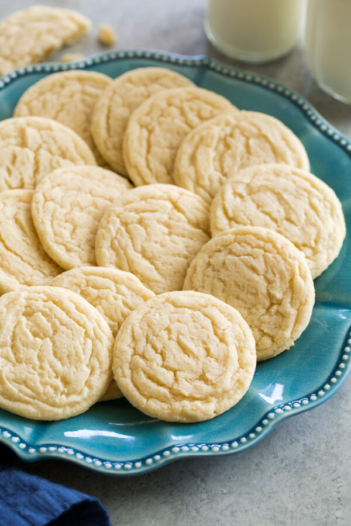

Sugar Cookies

Description
Quick and easy sugar cookies! They are really good, plain or with candies in them. My friend uses chocolate mints on top, and they're great!
This batch makes about four dozen cookies.
Ingredients
- 2 ¾ cups all-purpose flour
- 1 teaspoon baking soda
- ½ teaspoon baking powder
- 1 cup butter, softened
- 1 ½ cups white sugar
- 1 egg
- 1 teaspoon vanilla extract
Steps
- Cook noodles according to package directions.
- Preheat oven to 350 degrees F (175 degrees C).
- In a medium skillet over medium-high heat, brown the ground beef with the onion, garlic and green bell pepper. Drain excess fat. Stir in the noodles, pepperoni, pizza sauce and milk, and mix well. Pour this mixture into a 2-quart casserole dish.
- Bake at 350 degrees F (175 degrees C) for 20 minutes, top with the cheese, then bake for 5 to 10 more minutes.